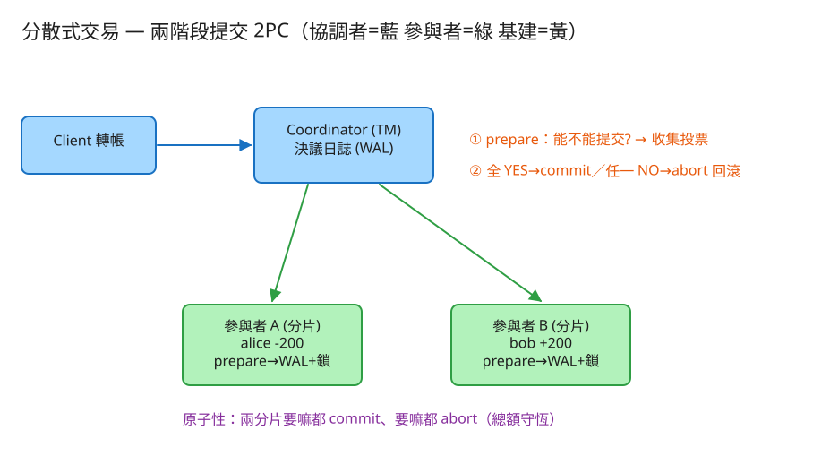

K 分散式系統 建議 55 分鐘 Design Distributed Transactions / NewSQL
| 指標 | 假設 | 推算 / 含義 |
|---|---|---|
| 跨分片交易佔比 | 多數交易落在單分片 | 單分片走本地交易即可；只有少數跨分片才走 2PC——設計上要盡量讓資料同分片（依使用者/帳戶 colocate） |
| 一筆 2PC 往返 | prepare 1 RTT + commit 1 RTT | ≈ 2 倍單機交易延遲（同區內 RTT ~0.5ms → 多 ~1ms；跨區則放大） |
| 鎖定持有時間 | 從 prepare 到 commit/abort | = 兩階段全程；協調者越慢、參與者越多 → 鎖越久、阻塞越嚴重 |
| 參與者數 | 每筆交易 N 個分片 | 任一參與者掛掉都可能讓整筆阻塞；N 越大失敗機率越高 → 盡量小 |
| 協調者日誌寫 | 每筆交易 ≥1 次決議落盤 | 決議日誌是恢復的命脈，必須先落盤再通知 → 多一次 fsync 成本 |
# 對外：一筆跨分片業務交易（協調者內部展開成 2PC）
POST /api/transfer
Body: { "from": "A:alice", "to": "B:bob", "amount": 200 }
→ 200 { "txId": "tx_ab12", "decision": "COMMIT",
"phase1": [{"shard":"A","vote":"YES"},{"shard":"B","vote":"YES"}] }
→ 200 { "txId": "tx_cd34", "decision": "ABORT", ... } # 任一投 NO → 全回滾
# 協調者 ↔ 參與者（內部 RPC，2PC 兩階段）
prepare(txId, ops) → vote: YES | NO # 第一階段：能不能提交?（預寫+鎖定）
commit(txId) → ok # 第二階段：真的提交
abort(txId) → ok # 第二階段：丟棄預寫、回滾
# 查交易狀態 / 恢復用
GET /api/state → 各參與者餘額、鎖定、總額、協調者決議日誌
協調者（Transaction Manager）
transactions
tx_id PK
state ENUM(PREPARING, COMMITTED, ABORTED) -- 決議日誌（WAL，恢復命脈）
participants JSON -- 這筆牽涉哪些分片
decided_at TIMESTAMP
參與者（每個分片 / Resource Manager）
accounts
account PK
balance BIGINT -- 正式餘額（commit 後才變）
prepared (WAL：已 prepare、未 commit/abort 的預寫記錄)
tx_id PK
ops JSON -- 這筆要套用的變更（如 alice -200）
locked JSON -- 被鎖定的資源（提交前不讓別人動）prepared（WAL）並鎖定資源，但不動正式餘額。
這樣：①commit 就是把 prepared 套用到 balance；②abort 就是丟棄 prepared；③崩潰恢復時，參與者讀 prepared 就知道「我有一筆懸而未決的交易」，去問協調者最終結果。

✏️ 用 Excalidraw 開啟編輯（diagram.excalidraw） ┌──────────────────────────┐
client ──轉帳──▶ │ Coordinator (TM) │
│ 決議日誌(WAL): COMMIT/ABORT│
└──────────┬───────┬─────────┘
① prepare(能提交?) │ │ ① prepare(能提交?)
▼ ▼
┌──────────────┐ ┌──────────────┐
│ 參與者 A(分片)│ │ 參與者 B(分片)│
│ alice -200 │ │ bob +200 │
│ WAL預寫+鎖定 │ │ WAL預寫+鎖定 │
└──────────────┘ └──────────────┘
② 全 YES → commit（套用）／任一 NO → abort（回滾） ← 原子性：要嘛都做、要嘛都不做3PC 在 prepare 與 commit 之間插入一個 pre-commit 階段，讓參與者在協調者掛掉時能用逾時自行做出較安全的決定，理論上非阻塞。代價是多一輪往返（更慢），且在網路分區下仍可能不一致。實務上少用——大家寧可用「2PC + 把協調者做成 Raft 高可用」來解單點，而不是 3PC。
Google Percolator（TiDB 採用其模型）把 2PC 建在 BigTable 之上：選一個 primary lock（主鎖），prepare 時把鎖寫到各筆資料；commit 點就是「主鎖被清掉並寫上 commit 時間戳」這一個原子操作。其他筆是 secondary，順著主鎖判斷狀態。好處是不需要常駐協調者，崩潰後任何客戶端都能依主鎖把交易推進到結論（自我清理），大幅緩解阻塞。
[earliest, latest]（誤差 ε，通常幾毫秒）。| 瓶頸 | 症狀 | 對策 |
|---|---|---|
| 提交期間鎖定阻塞 | prepare→commit 全程鎖資源，並發吞吐下降 | 盡量單分片（colocation）避開 2PC；縮短窗口；參與者數量壓小 |
| 協調者單點故障 | 協調者掛 → 參與者卡 prepared 永遠等不到決議 | 決議先落盤可重發；協調者用 Raft 做高可用；Percolator 式自我清理 |
| 跨區延遲放大 | 每階段一個 RTT，跨洲 RTT 大 → 2PC 很慢 | 資料就近分片；跨區交易改用非同步/Saga；Spanner 用 commit wait 換一致性 |
| 熱點資源死鎖 | 多筆 2PC 互鎖同一帳戶 | 固定加鎖順序、逾時偵測死鎖、降低交易粒度 |
| 參與者越多越脆弱 | N 個參與者任一掛都可能阻塞 | 減少參與者數；可恢復的 WAL；冪等 commit/abort 便於重試 |
本題 demo 在單一 PHP process 內模擬一個協調者 + 兩個參與者（分片），把 2PC 的核心考點跑起來：
src/Coordinator.php 協調者(TM)：transfer() 跑完整 2PC——prepare 收集投票、全 YES → commit / 任一 NO → abort、決議寫入日誌（恢復命脈）。src/Participant.php 參與者(分片 RM)：prepare()（檢查餘額、預寫 WAL、鎖定，投 YES/NO）、commit()（套用變更、解鎖）、abort()（丟棄預寫、回滾）；各分片狀態存 data/shard_*.json，以 flock 原子化。public/index.php 路由 + 測試頁：跑跨分片轉帳看 prepare/commit 兩階段、注入某參與者失敗看 abort 回滾、查餘額與總額守恆。# 啟動
cd demo
php -S localhost:8047 -t public
# 瀏覽器開 http://localhost:8047
# 試：① 正常轉帳（看兩邊 prepare→YES、決議 COMMIT、總額不變）
# ② 注入分片 B prepare 投 NO → 再轉一次（A 投 YES、B 投 NO → 決議 ABORT → A 回滾，錢不會少）json + flock，每檔 declare(strict_types=1);。